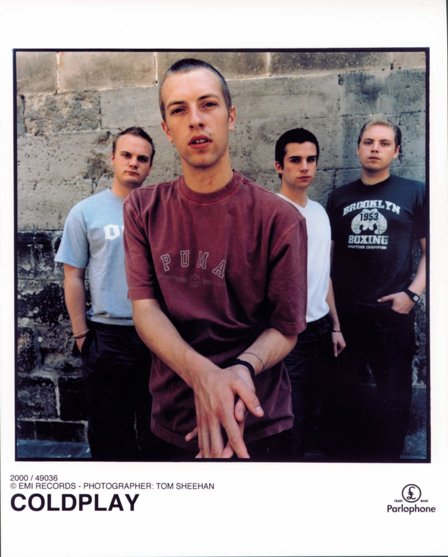

Coldplay
Biografia

Coldplay (1996) banda de pop rock fundada en Londres, Inglaterra. Todo surgió cuando Chris Martin y Jonny Buckland se conocieron en la Universidad de Londres en 1996, luego de un tiempo pensando en conformar una banda lograron consolidar Pectoralz. Posteriormente se unió al proyecto musical Guy Berryman. Un año después la banda fue renombrada Starfish, para ese momento ya realizaban algunas presentaciones en clubes. El siguiente en ingresar a la agrupación fue Phil Harvey, estudiante de Oxford, que luego se convirtió en el mánager de la banda. Ahora bien, la formación original fue completada con Will Champion, encargado de la percusión.
Luego de un tiempo se les convenció para que cambiaran su nombre, adoptando finalmente el nombre Coldplay. En un fin de semana en Virginia Water Martin conoció a Tim Rice-Oxley, y se dio cuenta de su gran talento en el piano, por ello le pidió ser el teclista de Coldplay, pero este se negó pues ya tenía su propia banda, Keane. Continuaron en la búsqueda de un integrante para el piano. En 1998, la banda lanzó quinientas copias del EP Safety. De estas quinientas la gran mayoría se regalaron a compañías discográficas, amigos y familiares.
Coldplay firmó un contrato de grabación con la compañía independiente Fierce Panda. Lanzaron EP Brothers & Sisters; grabado en sólo cuatro días, y lanzado en el mes de febrero del año 1999. Luego de un tiempo la banda firmó un contrato de cinco álbumes con Parlophone. En ese momento realizaron su primera aparición en Glastonbury, y luego regresaron al estudio, para grabar un EP titulado The Blue Room. Cinco mil copias fueron puestas en venta, y el sencillo «Bigger Stronger» fue transmitido por la BBC. Durante ese tiempo, el ambiente en Coldplay fue tenso: Martin expulsó a Champion de la banda.
Discografia temprana
| Nombre del Album | Fecha de lanzamiento |
|---|---|
| The Blue Room | 11 de octubre de 1999 |
| Parachutes | 10 de Julio de 2000 |
| A Rush of Blood to the Head | 26 de Agosto de 2002 |